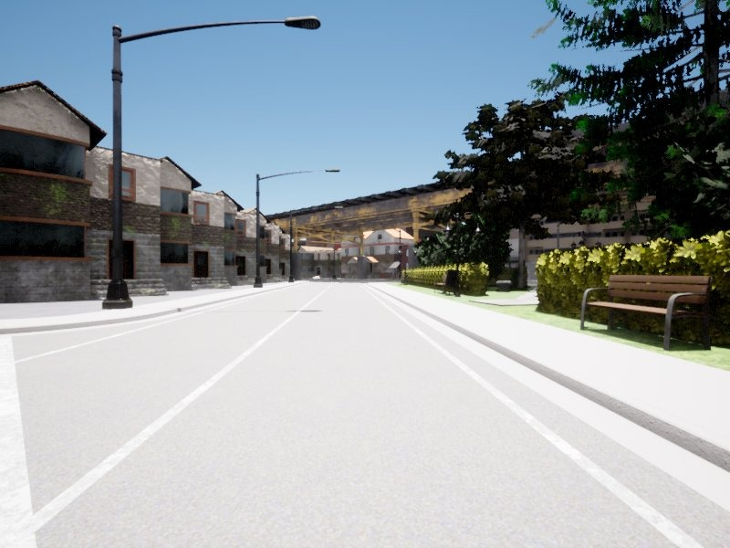
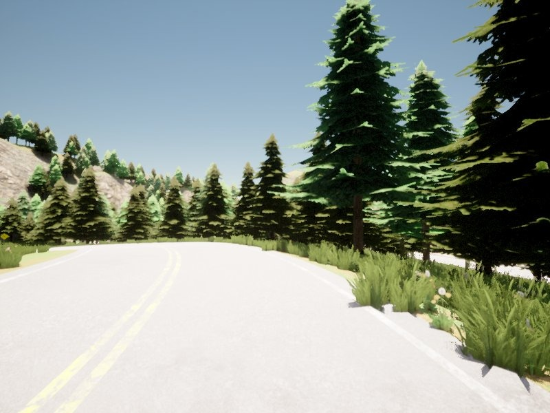
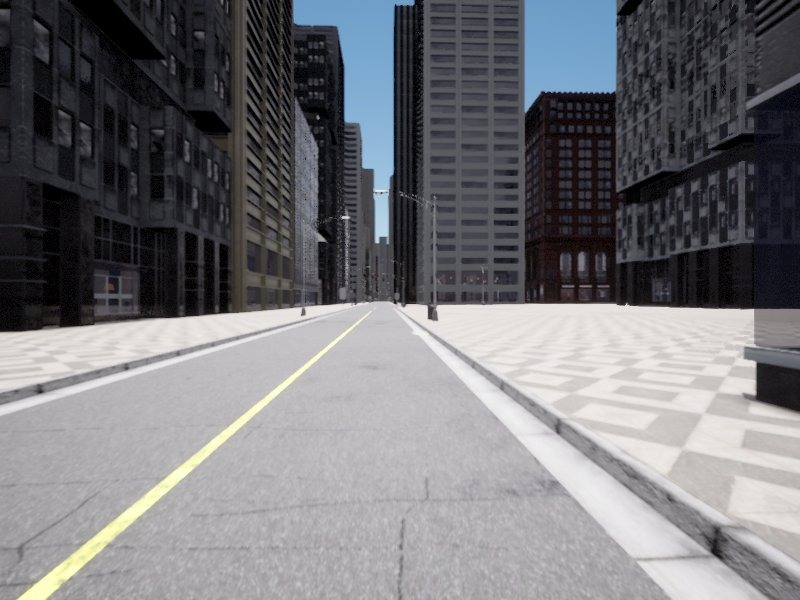

Week 37 · July 17, 2026
Dataset Composition Experiments & Robustness Testing
July 17, 2026
This week’s main objective was to integrate driving samples from Town 03 (urban), Town 07 (rural), and Town 12 (large city) to enrich the dataset with examples of driving in places with plazas, open spaces, forests, and light‑coloured walls – elements that caused confusion in the previous week’s best‑performing model.
A secondary objective was to generate robustness tests involving driving from different vehicle orientations and positions, as well as under different weather conditions (adding morning and evening to the existing midday conditions). This objective was partially fulfilled, as weather variation tests were not completed.
Driving was performed in Towns 03, 07, and 12, focusing on sections with vegetation, open spaces, and plazas similar to those in Town 02 that caused confusion in the previous model.

Town 03
Urban environment with plazas and buildings.

Town 07
Rural with vegetation areas.

Town 12
Large city with diverse scenery and open areas.
Figure 1 – Sample images from the collected driving data in Town 03 and Town 12.
An initial dataset of 62,000 samples was built using the combined data from Town 03, Town 07, and Town 12. The PilotNet model was trained on this dataset.
Training Result Video
https://youtu.be/xCLWHbhBSxA
Performance degraded – no continuous error‑free segments; lane departures and collisions with obstacles.
⛔ Result: Performance Degradation
The model showed worse performance compared to the previous week. It failed to achieve continuous driving segments without errors, producing lane departures, road exits, and collisions with obstacles.
To overcome the degradation, seven different dataset compositions were proposed and evaluated:
| Composition | Base (Week 36) | Town 03 | Town 07 | Town 12 | Result |
|---|
| 1 | ✅ | ✅ | ✅ | ✅ | — |
| 2 | ✅ | ✅ | ✅ | ❌ | — |
| 3 | ✅ | ✅ | ❌ | ❌ | — |
| 4 | ✅ | ✅ | ❌ | ✅ | — |
| 5 | ✅ | ❌ | ✅ | ✅ | — |
| 6 | ✅ | ❌ | ❌ | ✅ | — |
| 7 | ✅ | ❌ | ✅ | ❌ | BEST |
🏆 Best Result: Composition 7
Composition 7 (Base + Town 07) showed the best performance. The model maintained the desirable characteristics of the previous model while adding improved behaviour in forested and vegetated lanes.
Best Result Video
youtu.be/LAkGS482CYo
Stable behaviour with correct turns and improved performance in forests and vegetation.
Overall, the results show that compared to the previous week, the model maintains stable behaviour with correct turns, while adding improved performance in forests and vegetation.
| Scenario |
Recovery from lane |
Right turns |
Left turns |
Straight driving |
Light‑coloured wall |
Forest |
Plaza |
Open space |
| Week 37 (Comp 7) |
✅ OK |
✅ OK |
✅ OK |
✅ OK |
❌ Fail |
✅ OK |
❌ Fail |
❌ Fail |
Table 1 – Performance comparison across different scenarios. Composition 7 shows improvements in forests but still fails on light‑coloured walls, plazas, and open spaces.
⚠️ Partially Fulfilled
The secondary objective of generating robustness tests – including driving from different orientations and positions, and under varied weather conditions (morning and evening in addition to midday) – was partially fulfilled.
Completed: Tests with different vehicle orientations and starting positions.
Not completed: Weather variation tests (morning/evening conditions) were not carried out due to time constraints.
- Dataset composition matters significantly: Adding examples from different towns affects model behaviour in non‑obvious ways. Adding data to fix confusion can introduce new issues such as oscillations or unexpected steering.
- Best result from Town 07 only: The best outcome was achieved by adding only Town 07 samples. This preserved the previous model’s strengths while improving performance on vegetated lanes.
- Confusion persists on certain elements: The model still fails on light‑coloured walls, plazas, and open spaces. These remain open challenges.
- Partial robustness testing: Orientation/position tests were completed, but weather tests remain for future work.
- Change the randomness seed – generate different realisations of the dataset construction process.
- Repeat training and testing – with the new dataset realisations to evaluate variability and robustness.
- Complete weather robustness tests – add morning and evening conditions to the testing pipeline.
- Investigate solutions for walls, plazas, and open spaces – consider additional data collection or architectural changes.
📌 WEEK 37 SUMMARY – JULY 17, 2026
🎯 Main objective: Integrate Town 03, 07, 12 samples to fix confusion on plazas, forests, walls, and open spaces.
📊 Initial dataset: 62k samples → PilotNet training → performance degraded (video).
🧪 7 compositions tested: Base + Town 07 (Comp 7) gave the best results.
✅ Improved: Forest and vegetation handling; stable turns and recovery.
❌ Still failing: Light‑coloured walls, plazas, and open spaces.
⏳ Robustness: Orientation/position tests done; weather tests incomplete.
🔜 Next: Change random seed, repeat experiments, complete weather tests.
🎥 Videos: Initial run · Best result (Comp 7)
- [1] Bojarski, M., et al. (2016): End to end learning for self‑driving cars (PilotNet). arXiv:1604.07316
- [2] Mateus, A. (2026): Week 36 report – Validation in Town02: Stability Gains & Remaining Challenges.
- [3] CARLA Simulator (2026): Town 03, Town 07, Town 12 documentation – map features and scenery.
— Armando Mateus, Robotics Lab URJC